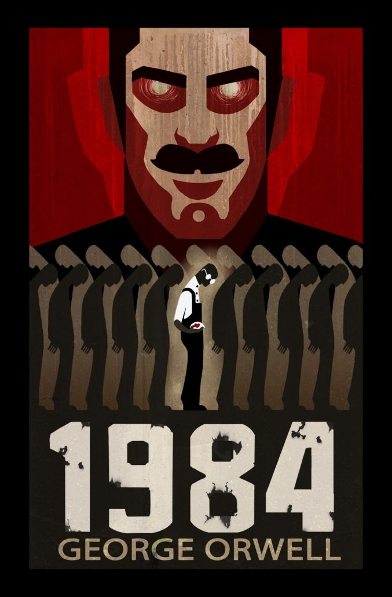
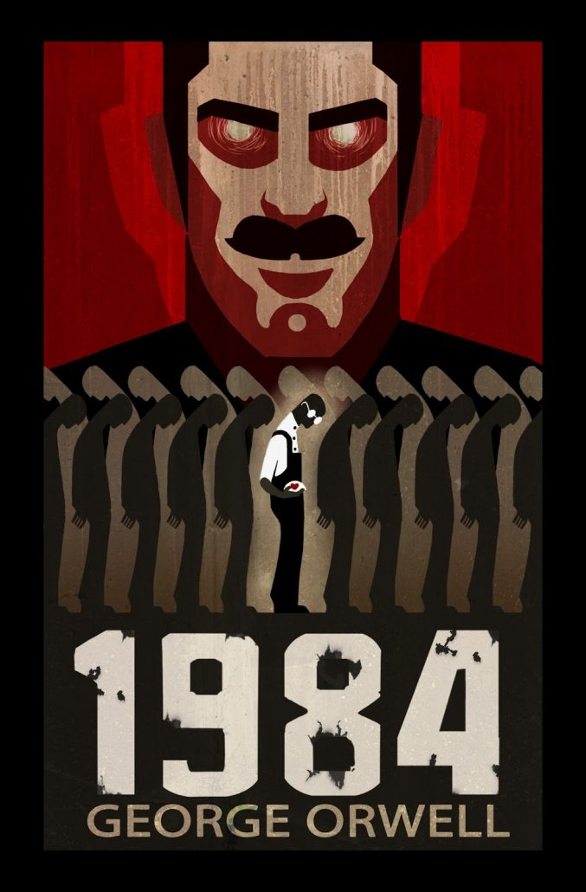

- Leer

- Coleccionar

- Jugar videojuegos


- Escribir (Algún día subiré todo lo que tengo)
- Imaginar escenarios épicos donde soy el protagonista y gano una pelea contra 100
- No hacer nada
Como lo indica el título de la pestaña de esta página, me llamo Saulo Andres Cáceres Granados. Tengo 18 años y vivo en Arequipa, en el distrito de Mariano Melgar. Y no tengo un cuarto propio.
Lo que me interesa del curso es: primero, entender todos estos conceptos de la programación web; segundo, mejorar en el desarrollo de mi vida profesional para lograr ser un buen ingeniero; y tercero, esta vez sí aprobar el curso, aprovechando que quitaron Perl del sílabo nuevo, gracias a Dios.
Mis estudios primarios los cursé en la I.E. Cristo Rey, en Camaná; los estudios secundarios fueron en la I.E. Sebastián Barranca, también en Camaná.
Escogí esta carrera, principalmente, por mi preferencia y gusto hacia la tecnología. Además, considero poder hacer muchas cosas con el uso de habilidades en programación o elaboración de sistemas que más adelante perfeccionaré.
Entre mis hobbies se encuentran:
- Leer

- Coleccionar
- Jugar videojuegos
- Escribir (Algún día subiré todo lo que tengo)
- Imaginar escenarios épicos donde soy el protagonista y gano una pelea contra 100
- No hacer nada
No soy de usar mucho las redes sociales. Solo uso las comunes:
- WhatsApp

- Facebook (solo para ver memes)

- Youtube